Capture notebook
What the frames show
A diagnostic image can reveal geometry before the game finishes its normal picture. These capture pairs identify which image reached each stage.
A wake behind the boat, 0.45 miles still on the map
After the first boat failure, the game offered a checkpoint skip. At “Catch up to the plane,” the player held full throttle for ten seconds. Frame 4620 reached the display just after release. Both motors and the wake are visible. The route read 0.45 miles before and after the input, so progress along the chase remains unverified.

The river scene rose from 4.358 to 5.454 displayed fps
With the controls released at the same 0.45-mile waypoint on the same GPU, the team measured 120 frame intervals, then repeated the measurement with overlapping frame submissions. Each run showed 121 consecutive displayed frames and no shader compilation. Median intervals fell from 227.9 to 182.2 ms and the 95th percentile from 252.7 to 220.7 ms. That is a 25.15% increase in displayed fps in one pair of runs. The river still updates only about five times a second.
The workbench offered a claw hammer
After the four earlier checkpoint skips, the player reached the camp workbench on foot. Pressing LB on its white HAMMER prompt removed the prompt. The character bent down and the ordinary HUD gained a hammer icon. The equipment wheel then identified the tool as “CLAW HAMMER / IN HAND.”
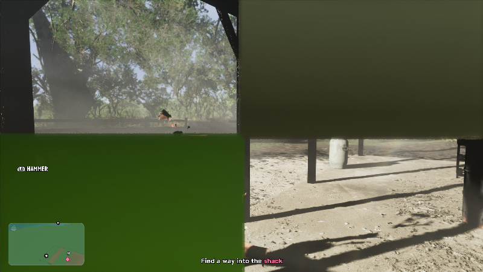

The wheel registered a second tool
A second LB pickup at the same bench exchanged the claw hammer for a sledgehammer. The wheel now read “SLEDGEHAMMER / IN HAND,” and the claw hammer could be picked up again from the ground. “Find a way into the shack” remained active. Entry has yet to be recorded.
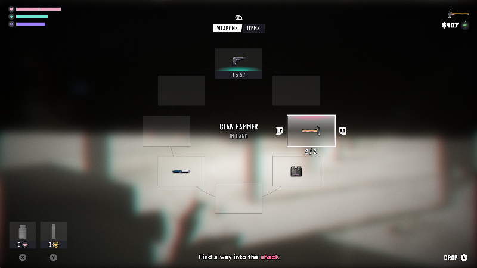

The storage fix held through the first boat failure
The save, options and storage request-ID setting matched the failed G16 comparison. All 17 G17 file queues waited for explicit submission. Failed destination writes fell from 2,156 (about 348 MiB) to zero. The game accepted throttle at the first boat objective and later named the failure “Cal fell off the boat.” On the next checkpoint, ten seconds of full throttle left the displayed route at 0.45 miles.

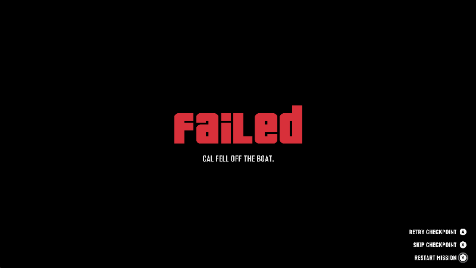
The character climbed onto the shack roof
On the far side of the shack, the player held forward and A twice. The camera then looked down on the corrugated roof from above, with the ground beyond the eaves. “Find a way into the shack” remained on screen.
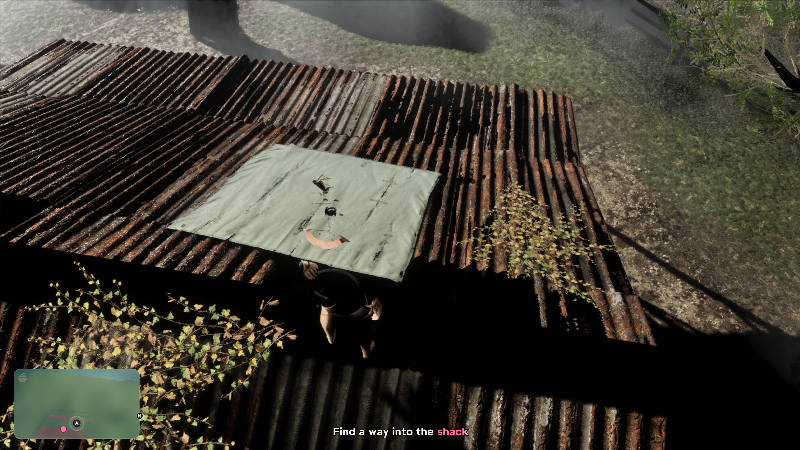

At the doors, with the original objective still active
Walking and using the turbine focus advanced two objectives after the four earlier checkpoint skips. The game’s Brief menu records their order. The character has now reached the double doors. The game’s on-foot controls list Y as Interact and A as Jump / Climb. The earlier reversible walking test used the left stick alone. A completed entry or meeting with Donnie has yet to be seen.


From the turbine to the west porch
The pink marker appeared after walking and a roughly ten-second hold on the Turbine focus prompt. Continuing toward it brought up “Find a way into the shack.” The first approach was blocked. A route along the bank and around the north wall reached the west porch. These two objectives followed the four earlier checkpoint skips. Neither required another skip.

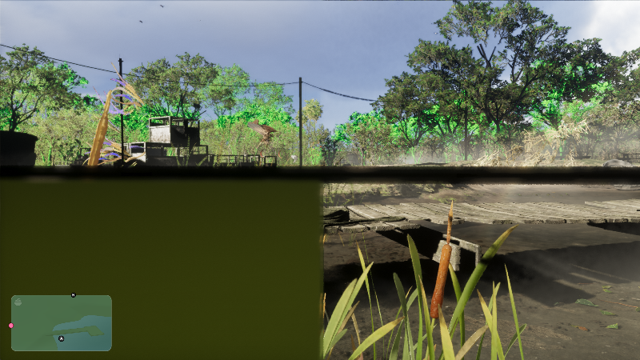
Inspect at the porch
The original Inspect prompt changed to Zoom RT and Exit R. The object remains unidentified. The HUD continued to ask for a way into the shack.
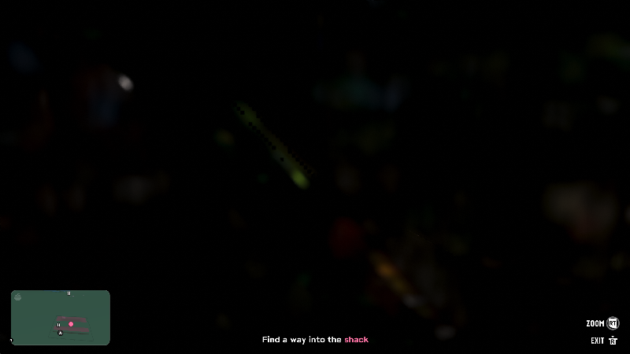
Four checkpoint skips to the camp
The first skip advanced the boat chase. The second opened the binocular tutorial, the third reached “Remain in the boat,” and the fourth opened the camp. Six map landmarks tracked forward and reverse walking at fixed zoom, then settled with the stick released. Both images come from the game window. Dark rectangles and slow rendering remain. Sustained boat driving and reaching Donnie are still unverified.

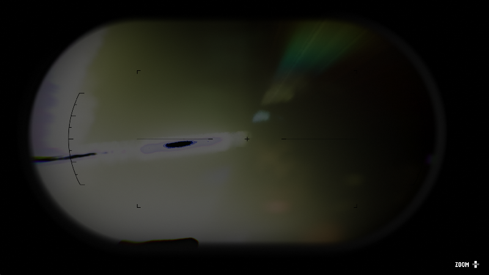
G6 · Local candidate
Two cinematics and a boat that still cannot travel
In the running game, all eight newly encountered shader programs created native pipelines with the game’s original stages. Three handled volumetric water, one handled optics and four were pixel shaders. These records establish pipeline creation. They do not identify which shader produced an individual pixel.
I measured the same 643 × 185 area below the horizon at the first “Follow the plane” prompt and roughly four seconds later. Magenta covered 29.15% and 10.55% of that area on G4, and 0% in both G6 samples. The cameras and sequence timing differed slightly. Black rectangles remain visible on the water.
After selecting Retry Checkpoint, I released the controls. From the first faint objective to the red “Engine destroyed” warning, the capture clock measured 7.430 s on G4 and 6.835 s on G6. Both runs ended with “Cal fell off the boat.” The island edge stayed fixed across all 18 inspected minimap rows on the G6 retry.
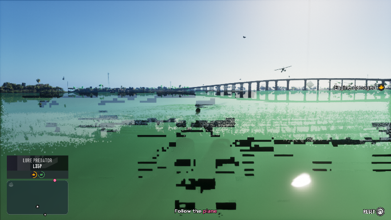

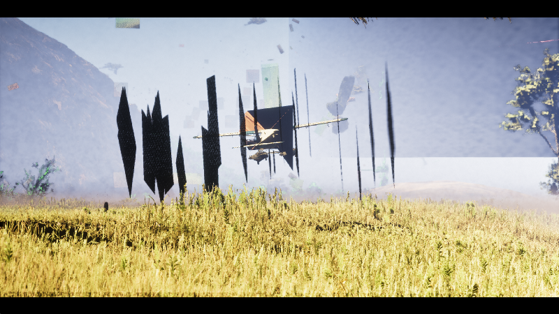
23:31 UTC · Report checked
From the boat to the binoculars
In the sunlit build I reached the named guard, an office cutscene and the controller tutorial with the teller. On the water, the unmodified checkpoint reported “Cal fell off the boat” both with neutral input and with the accelerator held. I used the game’s checkpoint skip to reach “Catch up to the plane.”
Steering pivoted both outboard motors. Throttle produced a wake, but the shoreline shifted by less than 0.3 measured pixels and the HUD stayed at 0.45 mi. The game reported “The boat couldn't be driven.” A second stock skip opened the shoreline tutorial. Holding the stick down-right on its loadout wheel selected the binoculars and advanced the objective to “Scope out the deal.” Travel under the boat’s own power remains unconfirmed.
The same upstream runtime family has an independent report of the passenger falling from the boat and the mission stopping. It documents that failure on another build. Independent boat-failure report · #279

23:31 UTC · Report checked
How much of the six-second logo actually moved?
With normal capture enabled on the same machine, the original build delivered 164 images to the window during the moving Rockstar logo. Only 24 were distinct. The corrected build delivered 171 images, 168 distinct. Renderer p99 fell from 151.88 to 54.03 ms. An occasional client interval still reached 116.79 ms. All 25 scheduled captures through frame 900 were retained.
The texture check now detects updates through a second mapping, and PNG encoding runs off the presentation thread. My adaptive texture work overlaps upstream PR #115. I submitted the PNG worker with a queue drain on normal exit in PR #142. It was open at the time of this report. These timings apply to the intro video.
Upstream texture check · PR #115 · My capture-worker contribution · PR #142
23:31 UTC · Report checked
The prison yard improved from 2.951 to 3.335 fps
The yard comparison used the same GPU and Series X view, with 650 consecutive native present intervals per build. The 95th-percentile interval fell from 377.83 to 330.77 ms. On the separate Series S route, the game passed its previous frame-1485 device removal and reached the yard at frame 1680 with native 1080p output. Its steady frame rate is still unmeasured.
In a separate off–on–off test, the indirect-draw experiment measured 3.03, 2.93 and 3.26 fps. It remains disabled. In two sampled yard frames the largest individual shadow-mask command took about 11 ms out of approximately 190–200 ms of queue wait. That command alone cannot account for most of the wait.
23:31 UTC · Report checked
What reached the ray-tracing scene
At 23:16 UTC, the prison run contained 1,763 genuine top-level instances. The first four examined had finite transforms and referenced three distinct original bottom-level acceleration structures. The in-game triangle data remains unresolved. The warm yard trial measured all six lighting buffers. cxccxc fixed the same two lighting shaders in upstream renderer commit 90228a7. A visible lighting improvement in this scene remains unverified.
The original shallow-water timestep program now returns 0.25 and 0.125 in its numerical tests and handles empty and null cases correctly on hardware and WARP. Mission replay is needed to connect that result to boat movement.
Eight selected original boat and world material programs translated, passed DXIL validation and created native test pipelines after integrating upstream work from #40, #235 and #280. The prior build passed none of eight. Seven pixel-shader tests paired with a stub vertex shader. Their appearance in a running scene remains unverified. Upstream lighting fix · cxccxc
Publication and source branches
I published my sunlit and earlier cell branches under descriptive names. The separate PortWatch tracking request is open and pending an editorial decision. No placement or rank has been assigned.
Sunlit gameplay branch · Tested branch revision 89884ba5 · Earlier cell branch · Earlier revision d25f89da · PortWatch request #69
· Field report recorded
The ordinary game window showed a sunlit yard
I tested a guarded build of the upstream fxceless/victory-gta6 baseline at 1684989. In native frame 2400, the character, fence and watchtower were visible in sunlight. Both controller sticks responded. Moving to the original guard waypoint triggered a letterboxed encounter. A new corridor appeared afterward.
In the solo run, 300 native frame intervals spanned 119.636 seconds, or 2.51 frames per second. This is an independent reproduction of the upstream renderer. My earlier cell-tutorial branch documents the nearly black cell trial. Its depth, lighting and HUD images remain below. Upstream baseline 1684989
· November 24, 2026
The cell trial on Windows
On the display. The title showed “Approach a cellmate to interact with them” in frame 3580 and “Go with the prison guard” in frame 3974. The final image matched the displayed buffer. The HUD was legible over a nearly black world. The objective advanced between controller commands. Its trigger, a guard interaction and mission completion remain unverified. Displayed HUD frames →
Walking and looking. The game read four opposing right-stick commands. A post returned to the same spot after both cycles. Two forward-and-reverse left-stick cycles moved a near bag relative to a far door, then back. The first forward movement measured 18 pixels at the bag and one at the door. The second measured ten and zero. These measurements used original scene depth. Control measurements →
What the room image shows. The grayscale still is an intermediate from the game’s indirect-lighting pass. Movement in ordinary world color has yet to be captured on video. A measured average frame rate for player-controlled world movement is also pending. Lighting still →
Build lineage. The test used a locally modified build of the VIctory community tester branch on Windows with an NVIDIA GPU. The tester branch documents upstream commit d2a4bae as its base. VIctory project · Upstream base
The objective changed between inputs
The earlier frame asked the player to approach a cellmate. The previous left-stick command had been released, and the following controller trial began after the guard objective was already on screen. The ordinary color image remained nearly black. The subsequent map check showed no visible character marker.


How the grayscale room was made
The game’s FinalGather compute shader wrote this single-channel R8_UINT image during indirect diffuse lighting. Its screen-probe resolve then read the image. This is an intermediate stage inside the renderer. The separate depth target used to measure the sticks is shown below.

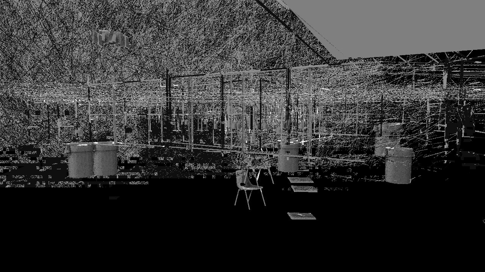
Walking, camera rotation and the cell tutorial
Two right-and-left stick cycles brought a post back to the same horizontal position. In a separate forward-and-back test, a nearby bag moved 18 pixels against a one-pixel shift at the far door. Reversing left the bag within one pixel of its starting position. A second walking cycle repeated the reversal. These measurements used an 800 × 450 grid. The original display showed the objective over darkness. A cellmate interaction and skeletal walking animation have yet to be seen.

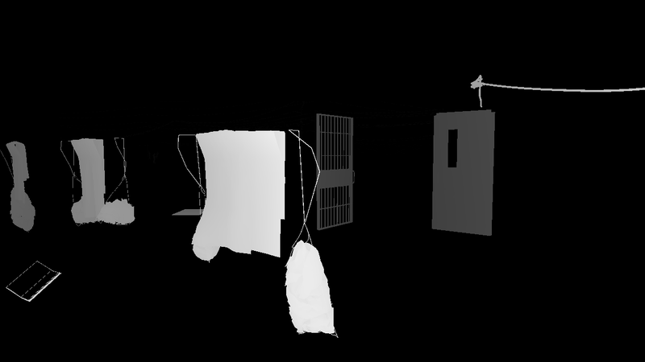
The game’s own controls
The tutorial labels the left stick “Move around” and the right stick “Move the camera.” This detail comes from the original HUD layer in frame 3317.

· Frame 2226
Geometry reached clipping. The light lists were empty.
Five pedestrian draws ran the mesh shader 28,032 times. It emitted 28,032 primitives and 9,411 came out of clipping. The GPU recorded zero pixel-shader invocations and zero passing samples for those draws.
A separate lighting pass in the same frame recorded 802,816 pixel-shader invocations and 802,816 passing samples. The preceding material pass marked 5,120 tiles. Each of the 57,600 range tiles reported an empty light list, and all twelve layers of the light mask contained only zeros.
The colors reached the game window
The game displayed its base-color image during the cutscene. The captured display buffer matched the full source image, and the display call succeeded. The normal composition from that instant was a pale gray field between black bars. At this point only the pause and resume controls had been verified.

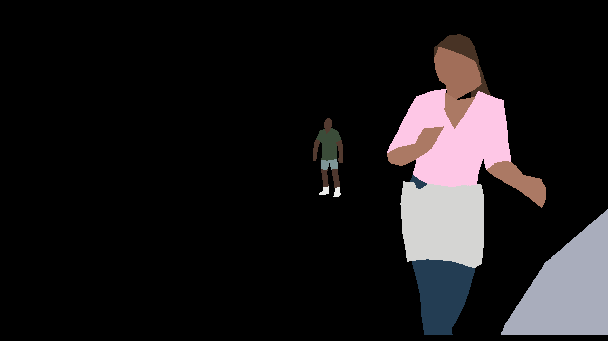

Frame 2085
The base-color pass contains 13 distinct RGB colors. Of 156,592 occupied samples, 156,321 contain nonblack color. An adjacent frame shows a small change in posture. The normal composition is flat pale gray. In the separate lighting target, all 11,059,200 red, green and blue channels measured zero immediately after the first tiled draw. The test window was showing the material-mask preview. Texture detail and player-controlled motion had yet to be verified in this run.


Seated figures in the Prologue
The displayed mask groups surfaces by material. Both figures, their surroundings and the table edges are visible. The normal composition from the same frame is almost black.

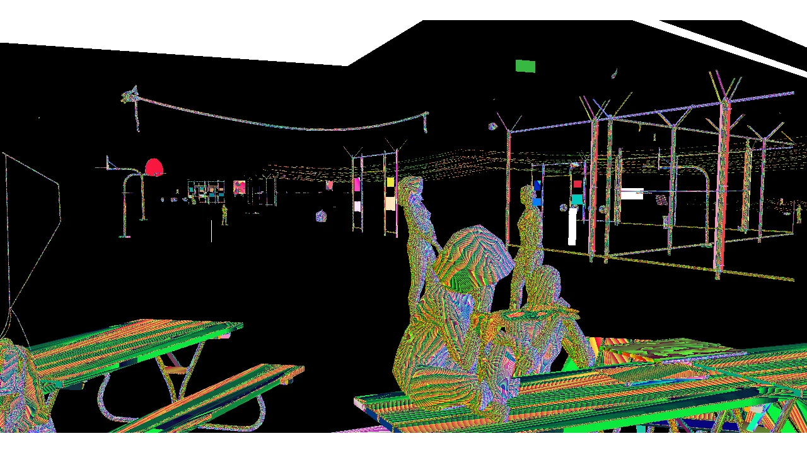

A 3D scene reached the window
The presentation receipt matched the chosen diagnostic image. A subsequent frame changed. This establishes that the game displayed changing geometry through the diagnostic route.

The street inside the renderer
Two intermediate targets showed corresponding building edges, pavement and posts. Native output at that moment contained opening credits on darkness.

Color and depth agreed
Cables and roadside signs appear in the same positions in the depth image. This was the first recognizable local world surface in this sequence.


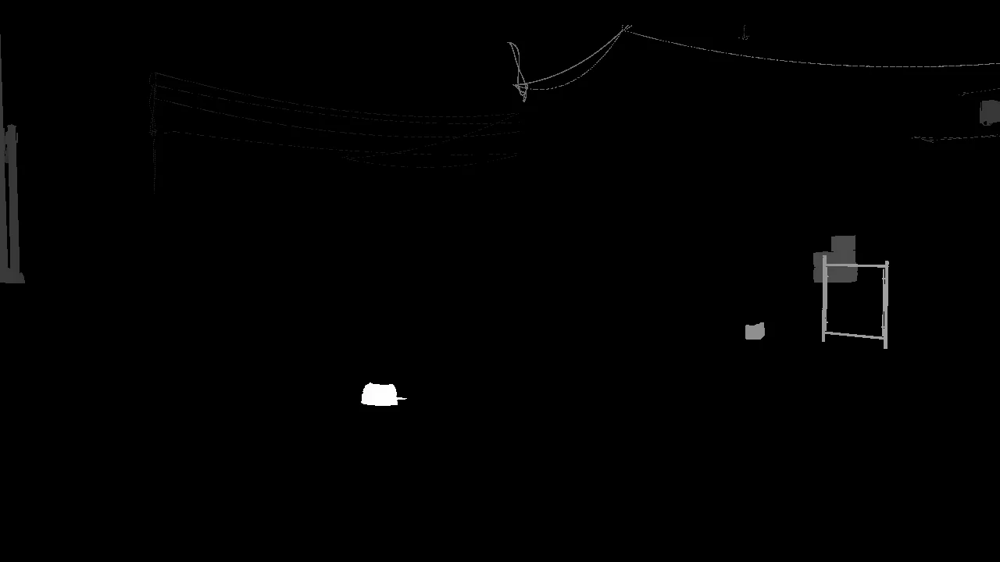
Technical sources